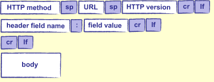
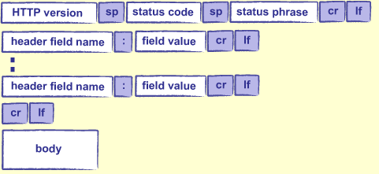

A Simple Web Server
by Greg Wilson
Greg Wilson is the founder of Software Carpentry, a crash course in computing skills for scientists and engineers. He has worked for 30 years in both industry and academia, and is the author or editor of several books on computing, including the 2008 Jolt Award winner Beautiful Code and the first two volumes of The Architecture of Open Source Applications. Greg received a PhD in Computer Science from the University of Edinburgh in 1993.
Introduction
The web has changed society in countless ways over the last two decades, but its core has changed very little. Most systems still follow the rules that Tim Berners-Lee laid out a quarter of a century ago. In particular, most web servers still handle the same kinds of messages they did then, in the same way.
This chapter will explore how they do that. At the same time, it will explore how developers can create software systems that don’t need to be rewritten in order to add new features.
Background
Pretty much every program on the web runs on a family of communication standards called Internet Protocol (IP). The member of that family which concerns us is the Transmission Control Protocol (TCP/IP), which makes communication between computers look like reading and writing files.
Programs using IP communicate through sockets.
Each socket is one end of a point-to-point communication channel,
just like a phone is one end of a phone call.
A socket consists of an IP address that identifies a particular machine
and a port number on that machine.
The IP address consists of four 8-bit numbers,
such as 174.136.14.108;
the Domain Name System (DNS) matches these numbers to symbolic names like aosabook.org
that are easier for human beings to remember.
A port number is a number in the range 0-65535 that uniquely identifies the socket on the host machine. (If an IP address is like a company’s phone number, then a port number is like an extension.) Ports 0-1023 are reserved for the operating system’s use; anyone else can use the remaining ports.
The Hypertext Transfer Protocol (HTTP) describes one way that programs can exchange data over IP. HTTP is deliberately simple: the client sends a request specifying what it wants over a socket connection, and the server sends some data in response (Figure: The HTTP Cycle.) The data may be copied from a file on disk, generated dynamically by a program, or some mix of the two.
The most important thing about an HTTP request is that it’s just text: any program that wants to can create one or parse one. In order to be understood, though, that text must have the parts shown in Figure: An HTTP Request.

The HTTP method is almost always either “GET” (to fetch information) or “POST” (to submit form data or upload files). The URL specifies what the client wants; it is often a path to a file on disk, such as/research/experiments.html,
but (and this is the crucial part)
it’s completely up to the server to decide what to do with it.
The HTTP version is usually “HTTP/1.0” or “HTTP/1.1”;
the differences between the two don’t matter to us.
HTTP headers are key/value pairs like the three shown below:
Accept: text/html
Accept-Language: en, fr
If-Modified-Since: 16-May-2005
Unlike the keys in hash tables, keys may appear any number of times in HTTP headers. This allows a request to do things like specify that it’s willing to accept several types of content.
Finally, the body of the request is any extra data associated with the request. This is used when submitting data via web forms, when uploading files, and so on. There must be a blank line between the last header and the start of the body to signal the end of the headers.
One header,
called Content-Length,
tells the server how many bytes to expect to read in the body of the request.
HTTP responses are formatted like HTTP requests (Figure: An HTTP Response):

The version, headers, and body have the same form and meaning. The status code is a number indicating what happened when the request was processed: 200 means “everything worked”, 404 means “not found”, and other codes have other meanings. The status phrase repeats that information in a human-readable phrase like “OK” or “not found”.For the purposes of this chapter there are only two other things we need to know about HTTP.
The first is that it is stateless: each request is handled on its own, and the server doesn’t remember anything between one request and the next. If an application wants to keep track of something like a user’s identity, it must do so itself.
The usual way to do this is with a cookie, which is a short character string that the server sends to the client, and the client later returns to the server. When a user performs some function that requires state to be saved across several requests, the server creates a new cookie, stores it in a database, and sends it to her browser. Each time her browser sends the cookie back, the server uses it to look up information about what the user is doing.
The second thing we need to know about HTTP
is that a URL can be supplemented with parameters
to provide even more information.
For example,
if we’re using a search engine,
we have to specify what our search terms are.
We could add these to the path in the URL,
but what we should do is add parameters to the URL.
We do this by adding ‘?’ to the URL
followed by ‘key=value’ pairs separated by ‘&‘.
For example,
the URL http://www.google.ca?q=Python
asks Google to search for pages related to Python:
the key is the letter ‘q’,
and the value is ‘Python’.
The longer query
http://www.google.ca/search?q=Python&client=Firefox
tells Google that we’re using Firefox,
and so on.
We can pass whatever parameters we want,
but again,
it’s up to the application running on the web site to decide
which ones to pay attention to,
and how to interpret them.
Of course,
if ‘?’ and ‘&’ are special characters,
there must be a way to escape them,
just as there must be a way to put a double quote character inside a character string
delimited by double quotes.
The URL encoding standard
represents special characters using ‘%’ followed by a 2-digit code,
and replaces spaces with the ‘+’ character.
Thus,
to search Google for “grade = A+” (with the spaces),
we would use the URL http://www.google.ca/search?q=grade+%3D+A%2B.
Opening sockets, constructing HTTP requests, and parsing responses is tedious,
so most people use libraries to do most of the work.
Python comes with such a library called urllib2
(because it’s a replacement for an earlier library called urllib),
but it exposes a lot of plumbing that most people never want to care about.
The Requests library is an easier-to-use alternative to urllib2.
Here’s an example that uses it to download a page from the AOSA book site:
import requests
response = requests.get('http://aosabook.org/en/500L/web-server/testpage.html')
print 'status code:', response.status_code
print 'content length:', response.headers['content-length']
print response.text
status code: 200
content length: 61
<html>
<body>
<p>Test page.</p>
</body>
</html>
request.get sends an HTTP GET request to a server
and returns an object containing the response.
That object’s status_code member is the response’s status code;
its content_length member is the number of bytes in the response data,
and text is the actual data
(in this case, an HTML page).
Hello, Web
We’re now ready to write our first simple web server. The basic idea is simple:
- Wait for someone to connect to our server and send an HTTP request;
- parse that request;
- figure out what it’s asking for;
- fetch that data (or generate it dynamically);
- format the data as HTML; and
- send it back.
Steps 1, 2, and 6 are the same from one application to another,
so the Python standard library has a module called BaseHTTPServer
that does those for us.
We just have to take care of steps 3-5,
which we do in the little program below:
import BaseHTTPServer
class RequestHandler(BaseHTTPServer.BaseHTTPRequestHandler):
'''Handle HTTP requests by returning a fixed 'page'.'''
# Page to send back.
Page = '''\
<html>
<body>
<p>Hello, web!</p>
</body>
</html>
'''
# Handle a GET request.
def do_GET(self):
self.send_response(200)
self.send_header("Content-Type", "text/html")
self.send_header("Content-Length", str(len(self.Page)))
self.end_headers()
self.wfile.write(self.Page)
#----------------------------------------------------------------------
if __name__ == '__main__':
serverAddress = ('', 8080)
server = BaseHTTPServer.HTTPServer(serverAddress, RequestHandler)
server.serve_forever()
The library’s BaseHTTPRequestHandler class
takes care of parsing the incoming HTTP request
and deciding what method it contains.
If the method is GET,
the class calls a method named do_GET.
Our class RequestHandler overrides this method
to dynamically generate a simple page:
the text is stored in the class-level variable Page,
which we send back to the client after sending
a 200 response code,
a Content-Type header telling the client to interpret our data as HTML,
and the page’s length.
(The end_headers method call inserts the blank line
that separates our headers from the page itself.)
But RequestHandler isn’t the whole story:
we still need the last three lines to actually start a server running.
The first of these lines defines the server’s address as a tuple:
the empty string means “run on the current machine”,
and 8080 is the port.
We then create an instance of BaseHTTPServer.HTTPServer
with that address and the name of our request handler class as parameters,
then ask it to run forever
(which in practice means until we kill it with Control-C).
If we run this program from the command line, it doesn’t display anything:
$ python server.py
If we then go to http://localhost:8080 with our browser,
though,
we get this in our browser:
Hello, web!
and this in our shell:
127.0.0.1 - - [24/Feb/2014 10:26:28] "GET / HTTP/1.1" 200 -
127.0.0.1 - - [24/Feb/2014 10:26:28] "GET /favicon.ico HTTP/1.1" 200 -
The first line is straightforward:
since we didn’t ask for a particular file,
our browser has asked for ‘/’ (the root directory of whatever the server is serving).
The second line appears because
our browser automatically sends a second request
for an image file called /favicon.ico,
which it will display as an icon in the address bar if it exists.
Displaying Values
Let’s modify our web server to display some of the values included in the HTTP request. (We’ll do this pretty frequently when debugging, so we might as well get some practice.) To keep our code clean, we’ll separate creating the page from sending it:
class RequestHandler(BaseHTTPServer.BaseHTTPRequestHandler):
# ...page template...
def do_GET(self):
page = self.create_page()
self.send_page(page)
def create_page(self):
# ...fill in...
def send_page(self, page):
# ...fill in...
send_page is pretty much what we had before:
def send_page(self, page):
self.send_response(200)
self.send_header("Content-type", "text/html")
self.send_header("Content-Length", str(len(page)))
self.end_headers()
self.wfile.write(page)
The template for the page we want to display is just a string containing an HTML table with some formatting placeholders:
Page = '''\
<html>
<body>
<table>
<tr> <td>Header</td> <td>Value</td> </tr>
<tr> <td>Date and time</td> <td>{date_time}</td> </tr>
<tr> <td>Client host</td> <td>{client_host}</td> </tr>
<tr> <td>Client port</td> <td>{client_port}s</td> </tr>
<tr> <td>Command</td> <td>{command}</td> </tr>
<tr> <td>Path</td> <td>{path}</td> </tr>
</table>
</body>
</html>
'''
and the method that fills this in is:
def create_page(self):
values = {
'date_time' : self.date_time_string(),
'client_host' : self.client_address[0],
'client_port' : self.client_address[1],
'command' : self.command,
'path' : self.path
}
page = self.Page.format(**values)
return page
The main body of the program is unchanged:
as before,
it creates an instance of the HTTPServer class
with an address and this request handler as parameters,
then serves requests forever.
If we run it and send a request from a browser
for http://localhost:8080/something.html,
we get:
Date and time Mon, 24 Feb 2014 17:17:12 GMT
Client host 127.0.0.1
Client port 54548
Command GET
Path /something.html
Notice that we do not get a 404 error,
even though the page something.html doesn’t exist as a file on disk.
That’s because a web server is just a program,
and can do whatever it wants when it gets a request:
send back the file named in the previous request,
serve up a Wikipedia page chosen at random,
or whatever else we program it to.
Serving Static Pages
The obvious next step is to start serving pages from the disk
instead of generating them on the fly.
We’ll start by rewriting do_GET:
def do_GET(self):
try:
# Figure out what exactly is being requested.
full_path = os.getcwd() + self.path
# It doesn't exist...
if not os.path.exists(full_path):
raise ServerException("'{0}' not found".format(self.path))
# ...it's a file...
elif os.path.isfile(full_path):
self.handle_file(full_path)
# ...it's something we don't handle.
else:
raise ServerException("Unknown object '{0}'".format(self.path))
# Handle errors.
except Exception as msg:
self.handle_error(msg)
This method assumes that it’s allowed to serve any files in or below
the directory that the web server is running in
(which it gets using os.getcwd).
It combines this with the path provided in the URL
(which the library automatically puts in self.path,
and which always starts with a leading ‘/’)
to get the path to the file the user wants.
If that doesn’t exist,
or if it isn’t a file,
the method reports an error by raising and catching an exception.
If the path matches a file,
on the other hand,
it calls a helper method named handle_file
to read and return the contents.
This method just reads the file
and uses our existing send_content to send it back to the client:
def handle_file(self, full_path):
try:
with open(full_path, 'rb') as reader:
content = reader.read()
self.send_content(content)
except IOError as msg:
msg = "'{0}' cannot be read: {1}".format(self.path, msg)
self.handle_error(msg)
Note that we open the file in binary mode—the ‘b’ in ‘rb’—so that Python won’t try to “help” us by altering byte sequences that look like a Windows line ending. Note also that reading the whole file into memory when serving it is a bad idea in real life, where the file might be several gigabytes of video data. Handling that situation is outside the scope of this chapter.
To finish off this class, we need to write the error handling method and the template for the error reporting page:
Error_Page = """\
<html>
<body>
<h1>Error accessing {path}</h1>
<p>{msg}</p>
</body>
</html>
"""
def handle_error(self, msg):
content = self.Error_Page.format(path=self.path, msg=msg)
self.send_content(content)
This program works,
but only if we don’t look too closely.
The problem is that it always returns a status code of 200,
even when the page being requested doesn’t exist.
Yes,
the page sent back in that case contains an error message,
but since our browser can’t read English,
it doesn’t know that the request actually failed.
In order to make that clear,
we need to modify handle_error and send_content as follows:
# Handle unknown objects.
def handle_error(self, msg):
content = self.Error_Page.format(path=self.path, msg=msg)
self.send_content(content, 404)
# Send actual content.
def send_content(self, content, status=200):
self.send_response(status)
self.send_header("Content-type", "text/html")
self.send_header("Content-Length", str(len(content)))
self.end_headers()
self.wfile.write(content)
Note that we don’t raise ServerException when a file can’t be found,
but generate an error page instead.
A ServerException is meant to signal an internal error in the server code,
i.e.,
something that we got wrong.
The error page created by handle_error,
on the other hand,
appears when the user got something wrong,
i.e.,
sent us the URL of a file that doesn’t exist. 1
Listing Directories
As our next step,
we could teach the web server to display a listing of a directory’s contents
when the path in the URL is a directory rather than a file.
We could even go one step further
and have it look in that directory for an index.html file to display,
and only show a listing of the directory’s contents if that file is not present.
But building these rules into do_GET would be a mistake,
since the resulting method would be a long tangle of if statements
controlling special behaviors.
The right solution is to step back and solve the general problem,
which is figuring out what to do with a URL.
Here’s a rewrite of the do_GET method:
def do_GET(self):
try:
# Figure out what exactly is being requested.
self.full_path = os.getcwd() + self.path
# Figure out how to handle it.
for case in self.Cases:
handler = case()
if handler.test(self):
handler.act(self)
break
# Handle errors.
except Exception as msg:
self.handle_error(msg)
The first step is the same:
figure out the full path to the thing being requested.
After that,
though,
the code looks quite different.
Instead of a bunch of inline tests,
this version loops over a set of cases stored in a list.
Each case is an object with two methods:
test,
which tells us whether it’s able to handle the request,
and act,
which actually takes some action.
As soon as we find the right case,
we let it handle the request
and break out of the loop.
These three case classes reproduce the behavior of our previous server:
class case_no_file(object):
'''File or directory does not exist.'''
def test(self, handler):
return not os.path.exists(handler.full_path)
def act(self, handler):
raise ServerException("'{0}' not found".format(handler.path))
class case_existing_file(object):
'''File exists.'''
def test(self, handler):
return os.path.isfile(handler.full_path)
def act(self, handler):
handler.handle_file(handler.full_path)
class case_always_fail(object):
'''Base case if nothing else worked.'''
def test(self, handler):
return True
def act(self, handler):
raise ServerException("Unknown object '{0}'".format(handler.path))
and here’s how we construct the list of case handlers
at the top of the RequestHandler class:
class RequestHandler(BaseHTTPServer.BaseHTTPRequestHandler):
'''
If the requested path maps to a file, that file is served.
If anything goes wrong, an error page is constructed.
'''
Cases = [case_no_file(),
case_existing_file(),
case_always_fail()]
...everything else as before...
Now,
on the surface this has made our server more complicated,
not less:
the file has grown from 74 lines to 99,
and there’s an extra level of indirection
without any new functionality.
The benefit comes when we go back to the task that started this chapter
and try to teach our server to serve up
the index.html page for a directory if there is one,
and a listing of the directory if there isn’t.
The handler for the former is:
class case_directory_index_file(object):
'''Serve index.html page for a directory.'''
def index_path(self, handler):
return os.path.join(handler.full_path, 'index.html')
def test(self, handler):
return os.path.isdir(handler.full_path) and \
os.path.isfile(self.index_path(handler))
def act(self, handler):
handler.handle_file(self.index_path(handler))
Here,
the helper method index_path constructs the path to the index.html file;
putting it in the case handler prevents clutter in the main RequestHandler.
test checks whether the path is a directory containing an index.html page,
and act asks the main request handler to serve that page.
The only change needed to RequestHandler is to add a case_directory_index_file object to our Cases list:
Cases = [case_no_file(),
case_existing_file(),
case_directory_index_file(),
case_always_fail()]
What about directories that don’t contain index.html pages?
The test is the same as the one above
with a not strategically inserted,
but what about the act method?
What should it do?
class case_directory_no_index_file(object):
'''Serve listing for a directory without an index.html page.'''
def index_path(self, handler):
return os.path.join(handler.full_path, 'index.html')
def test(self, handler):
return os.path.isdir(handler.full_path) and \
not os.path.isfile(self.index_path(handler))
def act(self, handler):
???
It seems we’ve backed ourselves into a corner.
Logically,
the act method should create and return the directory listing,
but our existing code doesn’t allow for that:
RequestHandler.do_GET calls act,
but doesn’t expect or handle a return value from it.
For now,
let’s add a method to RequestHandler to generate a directory listing,
and call that from the case handler’s act:
class case_directory_no_index_file(object):
'''Serve listing for a directory without an index.html page.'''
# ...index_path and test as above...
def act(self, handler):
handler.list_dir(handler.full_path)
class RequestHandler(BaseHTTPServer.BaseHTTPRequestHandler):
# ...all the other code...
# How to display a directory listing.
Listing_Page = '''\
<html>
<body>
<ul>
{0}
</ul>
</body>
</html>
'''
def list_dir(self, full_path):
try:
entries = os.listdir(full_path)
bullets = ['<li>{0}</li>'.format(e)
for e in entries if not e.startswith('.')]
page = self.Listing_Page.format('\n'.join(bullets))
self.send_content(page)
except OSError as msg:
msg = "'{0}' cannot be listed: {1}".format(self.path, msg)
self.handle_error(msg)
The CGI Protocol
Of course, most people won’t want to edit the source of their web server in order to add new functionality. To save them from having to do so, servers have always supported a mechanism called the Common Gateway Interface (CGI), which provides a standard way for a web server to run an external program in order to satisfy a request.
For example, suppose we want the server to be able to display the local time in an HTML page. We can do this in a standalone program with just a few lines of code:
from datetime import datetime
print '''\
<html>
<body>
<p>Generated {0}</p>
</body>
</html>'''.format(datetime.now())
In order to get the web server to run this program for us, we add this case handler:
class case_cgi_file(object):
'''Something runnable.'''
def test(self, handler):
return os.path.isfile(handler.full_path) and \
handler.full_path.endswith('.py')
def act(self, handler):
handler.run_cgi(handler.full_path)
The test is simple:
does the file path end with .py?
If so, RequestHandler runs this program.
def run_cgi(self, full_path):
cmd = "python " + full_path
child_stdin, child_stdout = os.popen2(cmd)
child_stdin.close()
data = child_stdout.read()
child_stdout.close()
self.send_content(data)
This is horribly insecure: if someone knows the path to a Python file on our server, we’re just letting them run it without worrying about what data it has access to, whether it might contain an infinite loop, or anything else.2
Sweeping that aside, the core idea is simple:
- Run the program in a subprocess.
- Capture whatever that subprocess sends to standard output.
- Send that back to the client that made the request.
The full CGI protocol is much richer than this—in particular, it allows for parameters in the URL, which the server passes into the program being run—but those details don’t affect the overall architecture of the system…
…which is once again becoming rather tangled.
RequestHandler initially had one method,
handle_file,
for dealing with content.
We have now added two special cases
in the form of list_dir and run_cgi.
These three methods don’t really belong where they are,
since they’re primarily used by others.
The fix is straightforward:
create a parent class for all our case handlers,
and move other methods to that class
if (and only if) they are shared by two or more handlers.
When we’re done,
the RequestHandler class looks like this:
class RequestHandler(BaseHTTPServer.BaseHTTPRequestHandler):
Cases = [case_no_file(),
case_cgi_file(),
case_existing_file(),
case_directory_index_file(),
case_directory_no_index_file(),
case_always_fail()]
# How to display an error.
Error_Page = """\
<html>
<body>
<h1>Error accessing {path}</h1>
<p>{msg}</p>
</body>
</html>
"""
# Classify and handle request.
def do_GET(self):
try:
# Figure out what exactly is being requested.
self.full_path = os.getcwd() + self.path
# Figure out how to handle it.
for case in self.Cases:
if case.test(self):
case.act(self)
break
# Handle errors.
except Exception as msg:
self.handle_error(msg)
# Handle unknown objects.
def handle_error(self, msg):
content = self.Error_Page.format(path=self.path, msg=msg)
self.send_content(content, 404)
# Send actual content.
def send_content(self, content, status=200):
self.send_response(status)
self.send_header("Content-type", "text/html")
self.send_header("Content-Length", str(len(content)))
self.end_headers()
self.wfile.write(content)
while the parent class for our case handlers is:
class base_case(object):
'''Parent for case handlers.'''
def handle_file(self, handler, full_path):
try:
with open(full_path, 'rb') as reader:
content = reader.read()
handler.send_content(content)
except IOError as msg:
msg = "'{0}' cannot be read: {1}".format(full_path, msg)
handler.handle_error(msg)
def index_path(self, handler):
return os.path.join(handler.full_path, 'index.html')
def test(self, handler):
assert False, 'Not implemented.'
def act(self, handler):
assert False, 'Not implemented.'
and the handler for an existing file (just to pick an example at random) is:
class case_existing_file(base_case):
'''File exists.'''
def test(self, handler):
return os.path.isfile(handler.full_path)
def act(self, handler):
self.handle_file(handler, handler.full_path)
Discussion
The differences between our original code
and the refactored version
reflect two important ideas.
The first is to think of a class as a collection of related services.
RequestHandler and base_case don’t make decisions or take actions;
they provide tools that other classes can use to do those things.
The second is extensibility:
people can add new functionality to our web server
either by writing an external CGI program,
or by adding a case handler class.
The latter does require a one-line change to RequestHandler
(to insert the case handler in the Cases list),
but we could get rid of that by having the web server read a configuration file
and load handler classes from that.
In both cases,
they can ignore most lower-level details,
just as the authors of the BaseHTTPRequestHandler class
have allowed us to ignore the details of handling socket connections
and parsing HTTP requests.
These ideas are generally useful; see if you can find ways to use them in your own projects.
-
We’re going to use
handle_errorseveral times throughout this chapter, including several cases where the status code404isn’t appropriate. As you read on, try to think of how you would extend this program so that the status response code can be supplied easily in each case. ↩ -
Our code also uses the
popen2library function, which has been deprecated in favor of thesubprocessmodule. However,popen2was the less distracting tool to use in this example. ↩